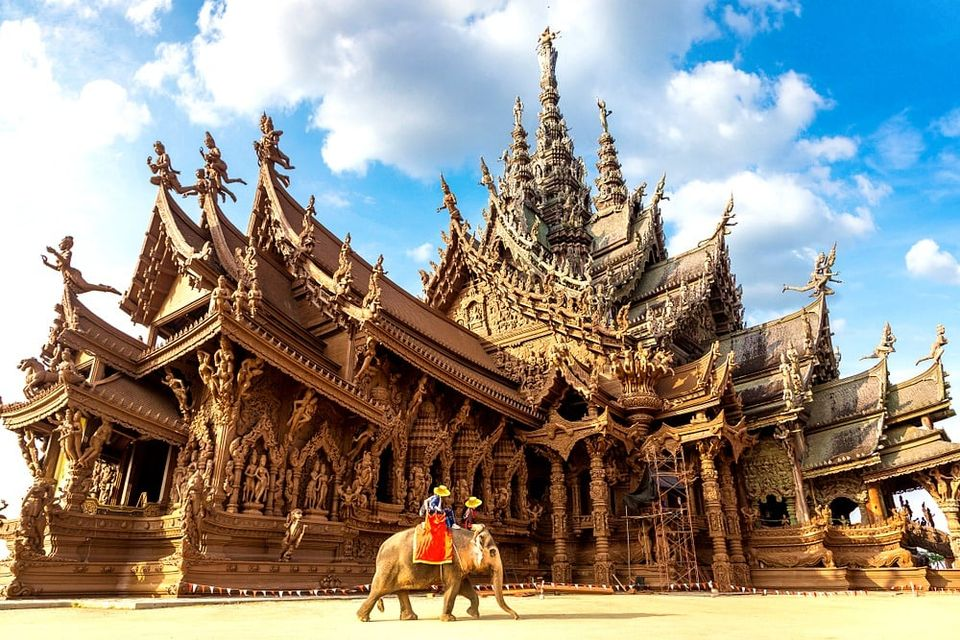
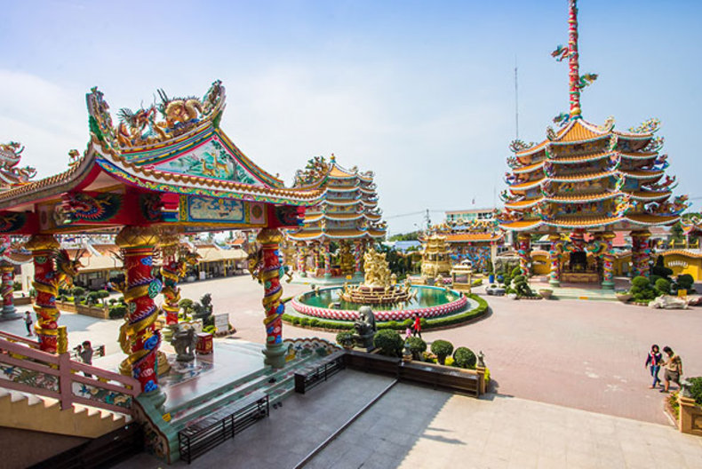

สถานที่ท่องเที่ยว
5 สถานที่ท่องเที่ยว จุด Check-In ยอดฮิตจังหวัดชลบุรี
|
|
1.พระพุทธรูปแกะสลักหน้าผาเขาชีจรรย์
การไหว้การสักการะเพื่อความเป็นสิริมงคล “พระพุทธมหาวชิร อุตตโมภาสศาสดา” พระพุทธรูปแกะสลักองค์ พระประทับนั่งปางมารวิชัยที่ใหญ่ที่สุดในโลกบนหน้าผาสูงขนาด
ความสูงรวมฐาน 130 เมตร อันเป็นสถานที่ท่องเที่ยวที่มีชื่อเสียง อีกแห่งหนึ่งของชลบุรี พระพุทธรูปแกะสลักหน้าผาเขาชีจรรย์ สร้างขึ้นเพื่อเฉลิมพระเกียรติพระบาทสมเด็จพระบรมชนกาธิเบศร มหาภูมิพลอดุลยเดชมหาราช บรมนาถบพิตรเนื่องในวโรกาสทรงครองสิริราชสมบัติครบ 50 ปี
ขอบคุณภาพจาก : traveloka |
|
2.แกรนด์แคนยอนคีรี
เหมืองเก่าแก่บนพื้นที่กว่า 100 ไร่ ที่ถูกทิ้งร้าง แต่กลับกลายเป็น แหล่งท่องเที่ยวยอดนิยม ภายในจะพบบ่อน้ำสีเขียวมรกตโอบล้อม
ด้วยภูเขาที่ทั้งสวยงามและแฝงความน่าทึ่งที่สร้างสรรค์โดยธรรมชาติ ที่นี่มีร้านอาหารและเครื่องดื่มรวมถึงจุดนั่งพักให้นักท่องเที่ยวได้ชมวิว
ถ่ายภาพสวยๆลงอวดกันใน IG บอกเลยใครที่รักในการถ่ายภาพที่นี่ถือว่าไม่มาไม่ได้
ขอบคุณภาพจาก : Sanook |
|  |
3.ปราสาทสัจธรรม
พิพิธภัณฑ์ปราสาทสัจธรรม ตั้งอยู่ที่แหลมราชเวช อ่าววงพระจันทร์ นับเป็น สถาปัตยกรรมอีกชิ้นหนึ่งที่สร้างชื่อเสียงให้กับประเทศไทย นี่คือที่สุดแห่ง
ความมหัศจรรย์แห่งงานศิลป์ ได้รับการยกย่องให้เป็นงานแกะสลักไม้ที่มี ขนาดใหญ่ที่สุดในประเทศไทยและมีความวิจิตรพิสดารอยู่แทบทุกจุด ภายใน
ปราสาทแฝงปรัชญาตะวันออก ศาสนา และศิลปวัฒนธรรม
ขอบคุณภาพจาก : yingnook
|
 |
4.เกาะสีชัง
เกาะสีชังถือเป็นสถานที่เที่ยวยอดฮิตของจังหวัดชลบุรี เงียบสงบเหมาะแก่การพักผ่อน และมีที่พักน่าๆ รักเยอะ ใช้เวลานั่งเรือข้ามไปที่เกาะประมาณ 45 นาทีเท่านั้น
บนเกาะเต็มไปด้วยสถานที่เที่ยวสวยๆมากมาย อาทิ ช่องเขาขาด, แหลมจักพงษ์ และสถานที่ที่ต้องแวะเยี่ยมชมก็คือ พิพิธภัณฑ์พระจุฑาธุชราชฐาน ที่เคยเป็นที่ประทับ
ของพระบาทสมเด็จพระจุลจอมเกล้าเจ้าอยู่หัว (รัชกาลที่ ๕) มีจุดถ่ายรูปที่ถือเป็น จุดที่ต้องแวะคือสะพานสีขาวทอดยาวลงทะเลเป็นศาลาริมทะเลเก่าแก่
ขอบคุณภาพจาก : https://district.cdd.go.th/kosichang/about- |
|
5.เกาะแสมสาร
เกาะแสมสาร เป็น 1 ใน 9 เกาะในโครงการอนุรักษ์พันธุกรรมพืช ใครที่เคยไปสัมผัส กับบรรยากาศของเกาะแสมสารต่างไม่อยากเชื่อว่านี่คือเกาะที่อยู่ใกล้กรุงเทพฯ แค่นี้
เพราะดีกรีความสวยงามระดับ 5 ดาว สามารถเที่ยวแบบ One day trip เช้าเย็นกลับยังได้ บนเกาะมีสองหาดน้ำทะเลใสวิ้งค์ โดยเฉพาะใครที่ชอบดำน้ำ
ต้องห้ามพลาดเพราะสามารถดำดูปะการังที่หน้าหาดได้เลย ตูนรับรองว่ามาที่นี่ วันเดียวประทับใจไปนานแสนนาน
ขอบคุณภาพจาก :Sanook |
| |
สถานที่สำคัญของ จังหวัดชลบุรี |
|
1.จักสานที่ใหญ่ที่สุดในโลก พนัสนิคม
ศูนย์จักสานใหญ่ที่สุดในโลก เป็นแหล่งเรียนรู้ทางวัฒนธรรมภูมิปัญญา ท้องถิ่นด้านงานจักสานด้วยไม้ไผ่ โดยเฉพาะการอนุรักษ์ฟื้นฟูภูมิปัญญา
ท้องถิ่นซึ่งมีปราชญ์ชาวบ้านเป็นผู้ถ่ายทอดข้อมูลเดิมในสมัยก่อนชาว อำเภอพนัสนิคมส่วนใหญ่จะประกอบอาชีพ ทำไร่ ทำนา หาปู หาปลา
เป็นอาหารในแต่ละวัน และได้นำไม้ไผ่ที่หามาจากละแวกที่อยู่อาศัย มาตัดสานทำเป็นอุปกรณ์และเครื่องมือในการจับสัตว์น้ำ เช่น ไซ ตุ้ม
ลอบ ตะแกรงสำหรับเอาไว้ใช้ช้อนกุ้ง หอย ปู ปลา ต่อมาจึงได้พัฒนา มาเป็นฝาชีครอบกับข้าวเพื่อป้องกันแมลงเข้ามาตอมอาหาร และพัฒนา
เป็นการสานฝาชีให้มีลวดลายสีสันสวยงามมากขึ้น จึงทำให้เครื่องจักสาน พนัสนิคมเป็นที่นิยมของคนทั่วไปและจำหน่ายอย่างแพร่หลาย พ.ศ.2544
ชาวบ้านจึงรวมตัวกันเพื่อจัดตั้ง “กลุ่มจักสานชุมชนย่อยที่ 1” เพื่อผลิตผลงานและพัฒนาสินค้าเกี่ยวกับการจักสานไม้ไผ่ไว้จำหน่าย เป็นรายได้ให้แก่สมาชิก
ขอบคุณภาพจาก :previous.thailand |
|  |
2. วิหารเทพสถิตพระกิติเฉลิม (ศาลเจ้าหน่าจาซาไท้จื้อ)
ศาลเจ้าที่มีชื่อเสียงมากที่สุดของจังหวัดชลบุรีที่สร้างขึ้นในรูปลักษณ์ สถาปัตยกรรมจีนสูง 4 ชั้น ในเนื้อที่ 13 ไร่ของศาลเจ้าแห่งนี้ ประกอบด้วย
อาคารหลัก 3 หลัง หอฟ้าดิน 1 หลัง โดยความโดดเด่นของที่นี่คือ การประดับประดาตามความเชื่อของชาวจีน เช่น รูปปั้นมังกรซึ่ง มีมาถึง 2,840 ตัว กระถางธูปศักดิ์สิทธิ์ เสาฟ้าดิน นอกจากนี้ยังเป็นสถานที่ ที่มีองค์ไท้ส่วยเอี้ย (ดาวเทพคุ้มครองดวงชะตาประจำปีเกิดของมวลมนุษย์) ครบ 60 องค์ เพื่อให้ผู้มาเยือนได้ขอพรได้ตรงตามปีเกิด ย้อนรอยศาลเจ้า
ศาลเจ้าหน่าจาซาไท้จื้อแห่งนี้ เดิมเป็นศาลเจ้าขนาดเล็กที่สร้างขึ้นโดย อาจารย์สมชาย เฉยศิริ เมื่อปี พ.ศ. 2534 ต่อมาศิษยานุศิษย์ พ่อค้า
ประชาชนที่เลื่อมใสในองค์เทพเจ้าหน่าซาไท้จื้อ ได้ร่วมบริจาคสร้างศาลเจ้า ขึ้นใหม่ ในวโรกาสเฉลิมพระเกียรติครบรอบ 72 พรรษาของพระบาทสมเด็จ พระเจ้าอยู่หัว เมื่อวันที่ 11 มกราคม พ.ศ. 2541 และสมเด็จพระสังฆราชฯ ได้เสด็จมาเป็นประธานพิธีเททองหล่อพระพุทธ 7 องค์
ขอบคุณภาพจาก : edtguide.com |
|
3. เขาสามมุก
จุดชมวิวเขาสามมุข จังหวัดชลบุรี แลนด์มาร์คอีกแห่งหนึ่งของการ มาเที่ยวบางแสน เป็นจุดชมวิวที่สามารถมองเห็นวิวทะเลแหลมแท่น
และอ่างศิลา ได้แบบกว้างไกล บริเวณจุดชมวิวจัดเป็นเส้นทางเดิน ขนานไปกับท้องทะเล ระหว่างทางมีระเบียงชมวิว รวมทั้งซุ้มนั่งเล่น
ดีไซน์สุดล้ำรูปวงกลมสำหรับนั่งเล่นพักผ่อนรับลมทะเล ที่โดดเด่น คือ อุโมงค์ตัวอักษรสีขาว เขียนชื่อภาษาอังกฤษว่า บางแสนเขาสามมุข
ให้ยืนถ่ายรูปโพสต์ท่าเก๋ บริเวณจุดชมวิวยังมีเจ้าถิ่น ลิงน้อยอาศัยอยู่ มากมาย กลมกลืนไปกับนักท่องเที่ยวหลายตัว
ขอบคุณภาพจาก :readme.me |
|
4. อุทยานหินล้านปี
อุทยานหินล้านปีและฟาร์มจระเข้พัทยา ตั้งอยู่บนพื้นที่กว่า 175 ไร่ ใช้เวลาเดินทางโดยรถยนต์จากตัวเมืองพัทยาเพียง 15 นาที
เราได้เพียรพยายามมานานกว่า 30 ปี เพื่อสรรสร้างอุทยานหินล้านปี และฟาร์มจระเข้พัทยาให้เป็นแหล่งท่องเที่ยวที่ น่าตื่นตาตื่นใจ สำหรับ
บรรดาผู้รักธรรมชาติ เพราะไม่เพียงแต่จะเป็นที่จัดแสดงพันธุ์สัตว์ป่า พฤกษชาติ และหินชนิดต่างๆ เท่านั้น เรายังมีการจัดการแสดงที่สนุก
สนานและตื่นเต้นอย่างหลากหลายไว้คอยต้อนรับผู้ มาเยือนอีกด้วย
ขอบคุณภาพจาก :thai.hotels2thailand.com |
|
5.ศูนย์ศึกษาธรรมชาติและอนุรักษ์ป่าชายเลน ชลบุรี
ศูนย์ศึกษาธรรมชาติและอนุรักษ์ ป่าชายเลนเพื่อการท่องเที่ยวเชิงนิเวศ จังหวัดชลบุรี เป็นผืนป่าชายเลนที่มีความอุดมสมบูรณ์ทางธรรมชาติ
ผืนสุดท้ายในจังหวัดชลบุรี มีเนื้อที่กว่า 300 ไร่ ได้รับความร่วมมือ จากกรมป่าไม้และองค์การบริหารส่วนจังหวัดชลบุรี สำนัก
งานป่าไม้จังหวัด จัดตั้งศูนย์ฯ ขึ้นเพื่ออนุรักษ์ป่าชายเลน และ ให้เป็นแหล่งเรียนรู้แก่ประชาชน มีเส้นทางศึกษาธรรมชาติ
เป็นสะพานไม้ที่ยาว 2,300 เมตร ซึ่งยาวที่สุดในประเทศไทย
ขอบคุณภาพจาก : แสนสุข. CITY |